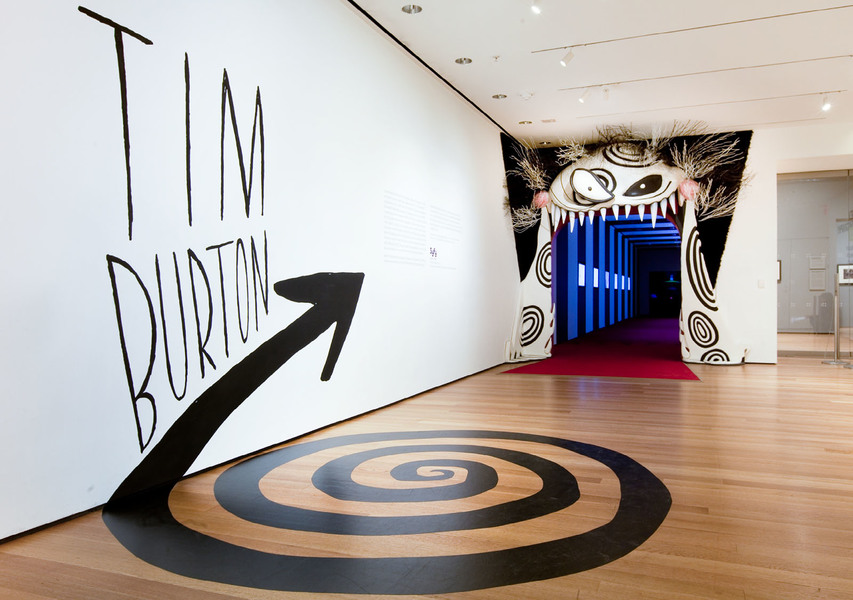
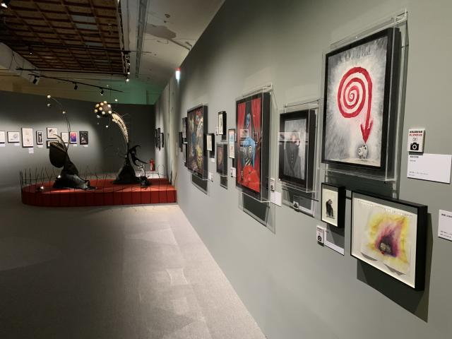
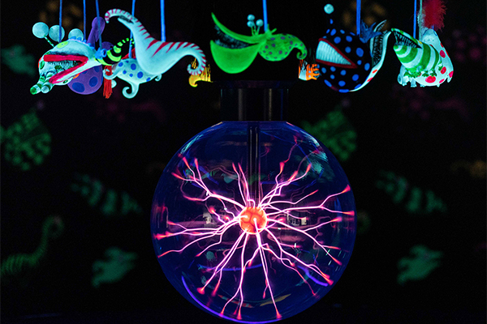
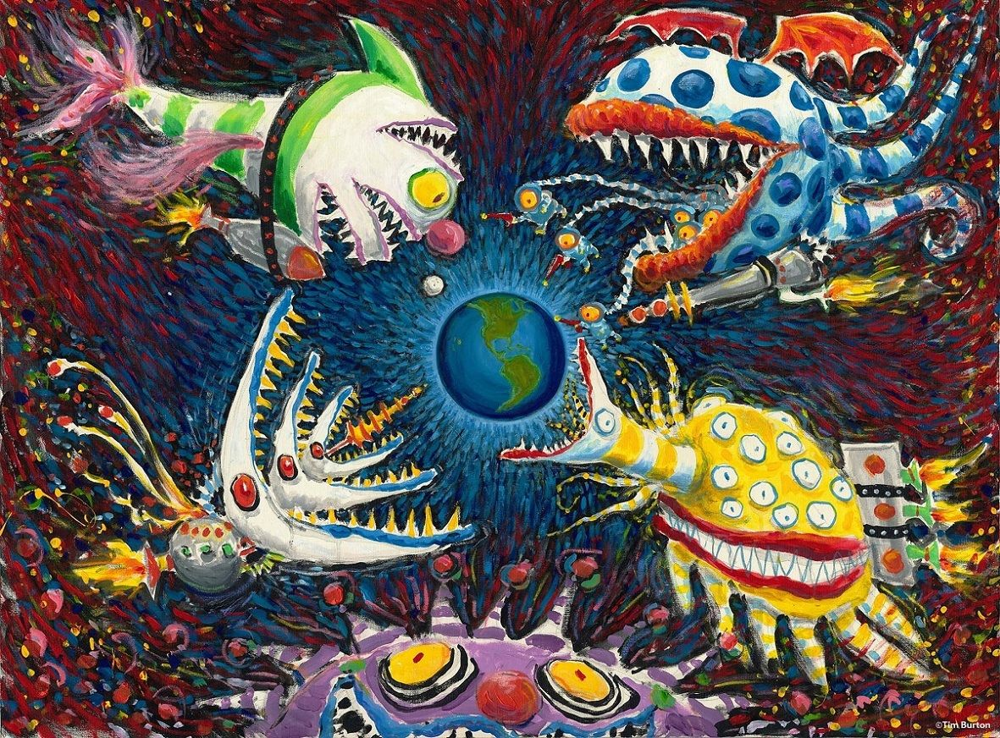
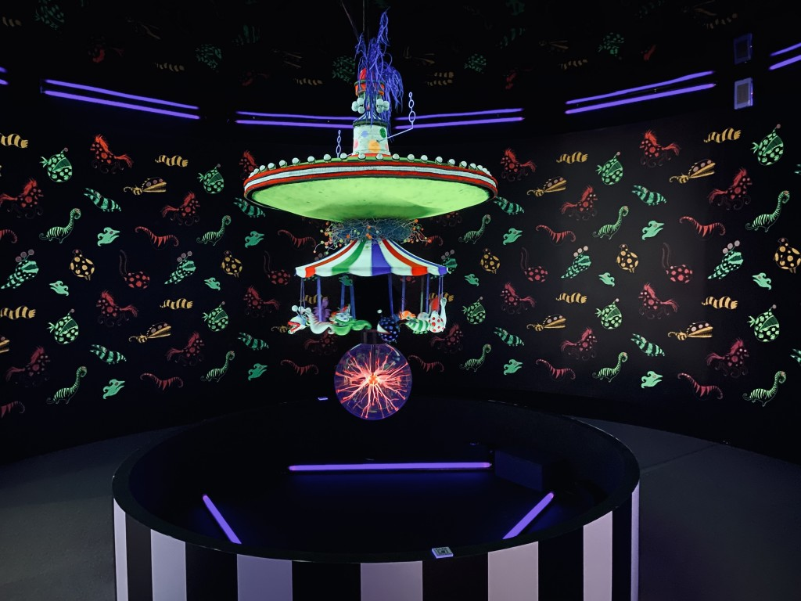
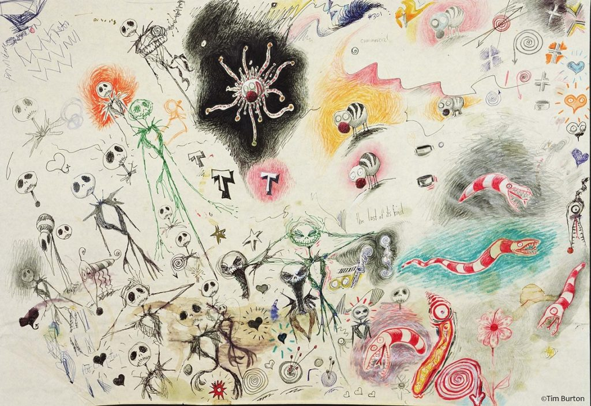
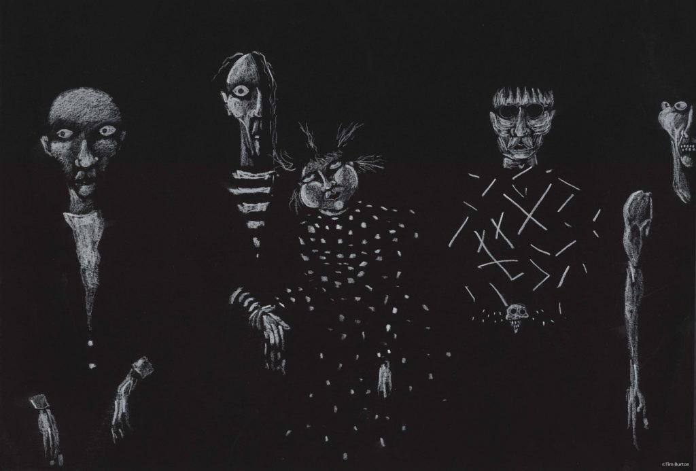

WELCOME TO TIM BURTON'S WORLD
1 / 7

Tim Burton's Life Work at LACMA
2 / 7

Tim Burton's Exhibition
3 / 7

Tim Burton's Exhibition
4 / 7

Surrounded, c1996
5 / 7

Untitled (Doodie Pad Series), c1989-1993
6 / 7

Untitled (Doodie Pad Series), c1989-1993
7 / 7

Untitled (Miscellaneous), c1980-1981